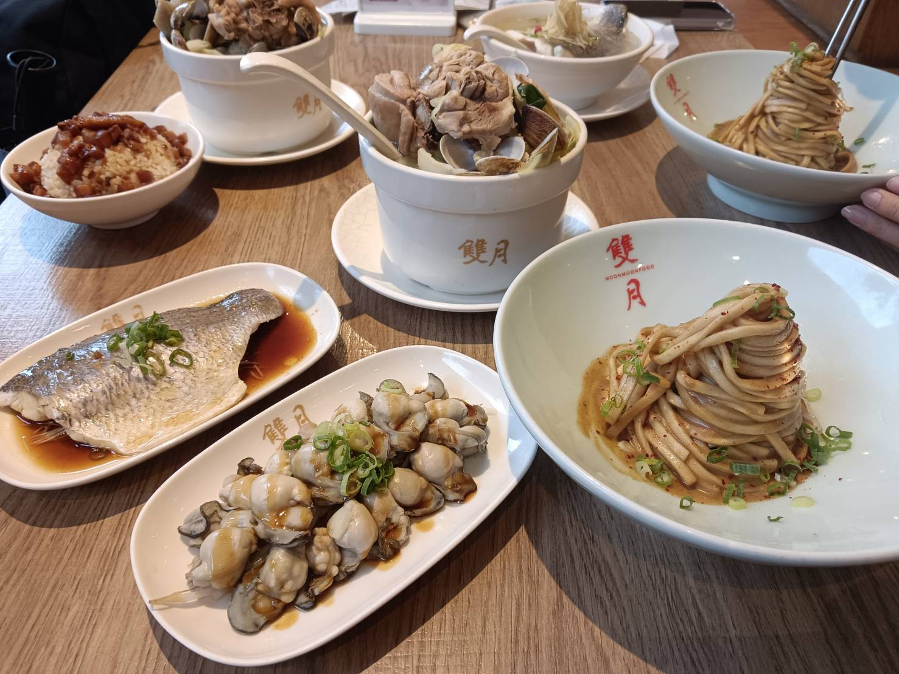
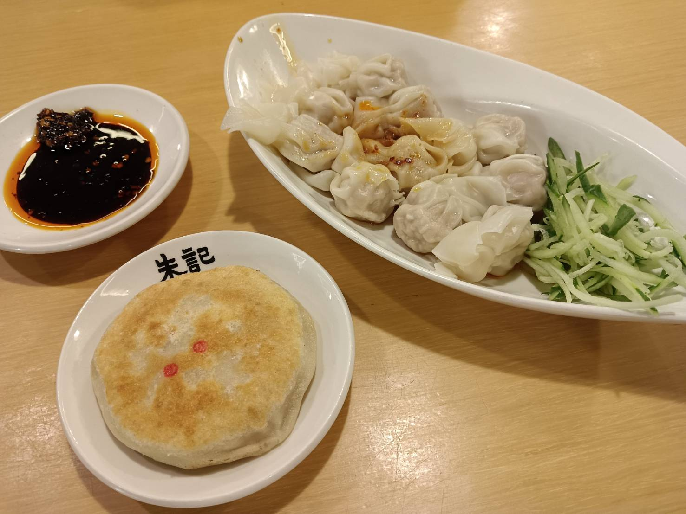
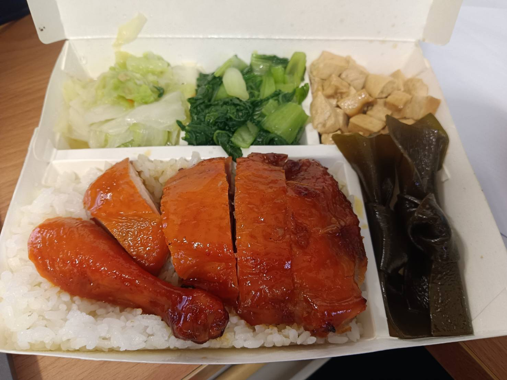
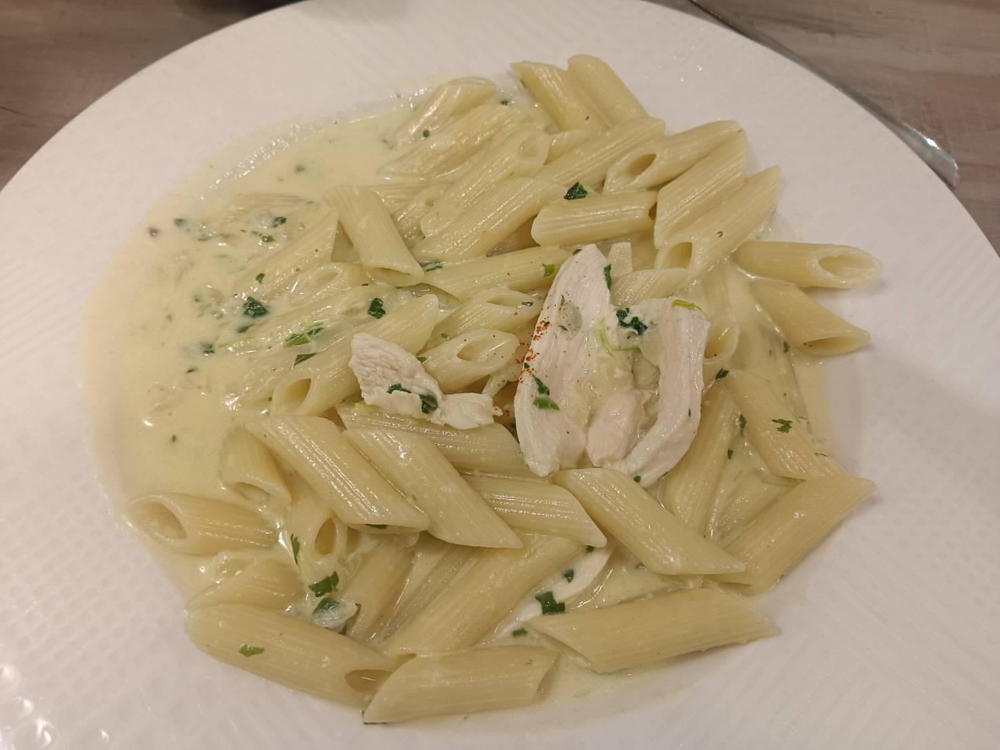
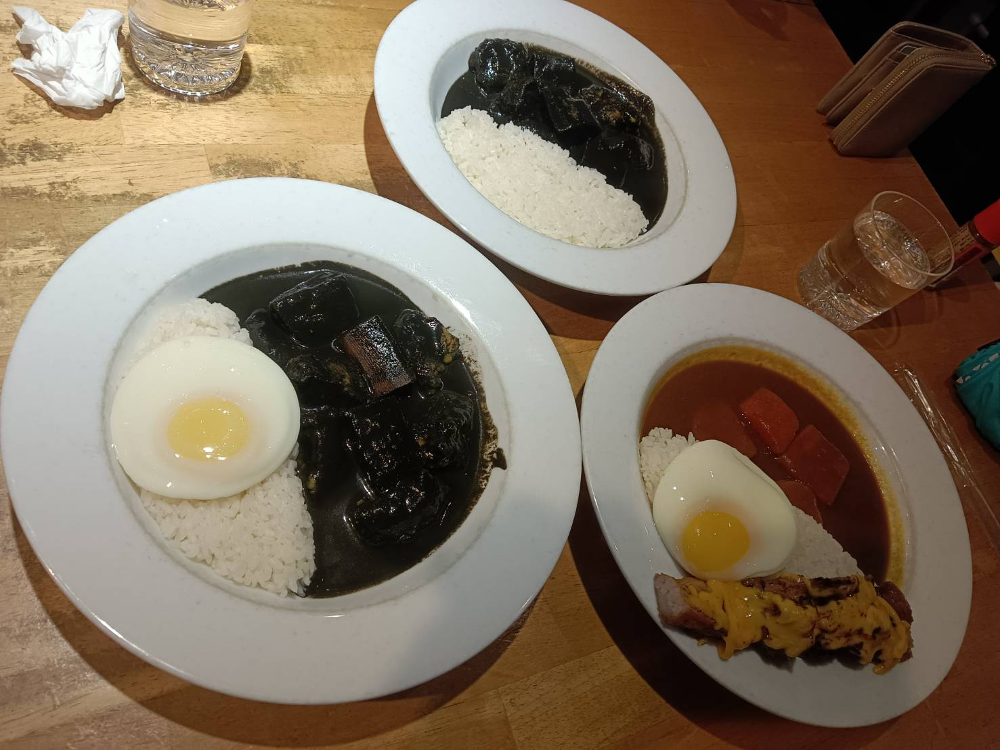

怎麼找台北美食？
從避開「打卡洗評」陷阱、以「捷運路網」為動脈，到多維度情境配對的系統化美食決策術。
為什麼我們總是在台北踩雷？
打開手機找餐廳，常見的 3 大典型無效覓食困境：
4.9 星的假象
滿滿五星好評，抵達才發現是「五星好評送肉盤/小菜」活動洗出來的。真正的口感與衛生品質堪憂。
盲目排隊 1 小時
跟著 IG 網紅打卡，現場苦等 60 分鐘，結果店內座位擁擠、限時 50 分鐘、味道普通，體驗極差。
「今天吃什麼？」死局
朋友群組或另一半互問吃什麼，每個人需求不同（預算、一人食、不能吵、帶長輩），缺乏情境對應清單。
Google 評分的「防坑解碼術」
如何一眼看穿店家的真實水平，避開活動虛胖評分？
- 基準門檻：4.0 顆星以上為優選起點。但在台北老饕圈，4.2 ~ 4.5 星且評論數 > 1,000 往往比 4.9 星更值得信賴。
- 評論基數：評論數 $\ge 300$ 則以上才具備統計效力，避免新開幕親友團洗星。
- 高星例外：低於 4.0 星的老字號小吃，多因「阿姨態度冷淡」被洗負評，但料理本體往往極強。
- 過濾話術：不看誇獎漂亮的五星照片，直接切換到「最低評分」。
- 識別硬傷：抱怨「排隊過久」、「肉質退步」、「環境髒亂」是實質痛點；若僅抱怨「沒冷氣」或「只收現金」則可視個人接受度斟酌。
- 避雷指針：在 Wiki 實體頁中明確提煉出排隊時間與限量規則。
以「捷運路網」為動脈錨定
台北美食圍繞捷運而生，步行 3~5 分鐘是最高效的覓食黃金半徑。
中山站（赤峰街文青與拉麵）、東門站（永康街異國料理）、大安站（老牌中式與精緻餐酒館）。
善導寺站（傳統早餐與必比登湯品）、忠孝敦化/復興（東區火鍋居酒屋）、市政府（信義高檔百貨美饌）。
台電大樓/公館（溫羅汀巷弄咖哩與台大學餐）、景美站（世新學生美食與景美夜市小吃）。
多維度用餐情境配對
找餐廳先問「情境（Occasions）」，再選「菜系（Cuisines）」，命中率 100%。
雙月食品社 青島店
板南線・捷運善導寺站 2號出口（步行3分鐘）
招牌特色：主打「湯肉分離」煮法，蛤蜊燉雞腿湯肉質緊實湯鮮甜、愛恨椒芝麵香麻順口、限定雙月油飯。
避雷指南：尖峰排隊通常 40~60 分鐘；限量油飯中午 12:00 前秒殺；青島老店座位擠需併桌，追求寬敞建議前往附近的濟南店。

朱記餡餅粥店 信義店
紅/棕線・捷運大安站 3號出口（步行2分鐘）
招牌特色：皮薄多汁爆汁牛肉餡餅 ＋ 清爽溫潤小米粥（老饕必加砂糖享用）、酥脆牛肉捲餅與鑊氣排骨炒飯。
避雷指南：剛出爐餡餅內部湯汁極燙，咬開時切記先吹涼防燙傷口腔；冷櫃小菜開架自取，多拿幾盤容易使客單價上升。

椰林燒臘
綠線・捷運公館站 2號出口（台大小福商場步行6分鐘）
招牌特色：卡滋脆皮燒肉外皮酥脆不膩、招牌三寶飯一次吃到叉燒油雞燒鴨；蔥油雞腿飯必請店家加滿特調蔥油與辣椒醬。
避雷指南：位於台大校內需稍微辨識動線；中午 12:00~12:40 學生排隊大潮，熱門肉品常在 12:30 前賣光，建議提早抵達。

MINT PASTA 綠薄荷麵食坊
綠線・捷運景美站 2號出口（步行4分鐘）
招牌特色：粉紅醬起司雞肉麵酸香兼具重奶香、野菇沙朗微辣開胃，每桌必點現烤蓬鬆酥皮濃湯。
避雷指南：不可事先訂位，需現場找位至櫃檯結帳；口味偏向台灣學生熱愛的濃郁多醬台式風格，非正統義式硬麵芯風格。

稻咖哩
綠線・公館站3號出口 / 台電大樓站2號出口（步行7分鐘）
招牌特色：炙燒起司烤豚肉焦香蜜汁牽絲、每日限量厚嫩牛肋條、墨魚極黑咖哩；內用更享「免費續咖哩醬」一次。
避雷指南：店內座位約 15 席較少，尖峰需現場候位；限量牛肋條晚來容易售罄；溫州街巷道窄不易停車。

美食獵人的 4 步決策 SOP
每次出門覓食，按這 4 步驟執行，永遠不再為吃什麼發愁：
台北美食互動快篩器
點選你現在的需求，立即推薦 Wiki 庫中最佳名店：
👆 點選上方情境標籤，即時獲取最佳推薦！